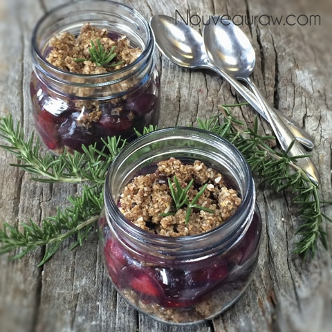
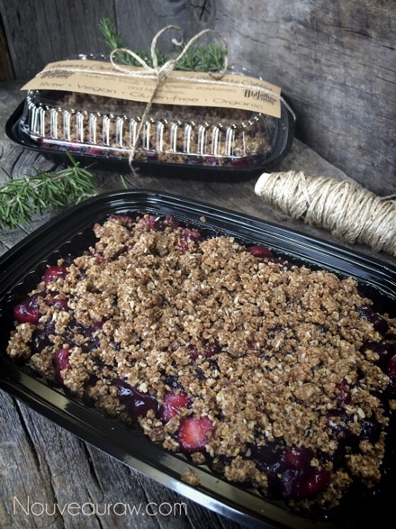

Rosemary Cherry Berry Cobbler

~ raw, vegan, gluten-free ~
Cobblers are my new love, well in the culinary world that is. They go together quickly; they taste amazing instantly, warmed, chilled, or the next day… on a fork or on a spoon!
The fresh-picked flavors of the cherries, strawberries, and blueberries fuse ever-so-nicely with the aromatic rosemary for an impressive interpretation of sweet and savory. Don’t get me wrong here; the rosemary is just a hint of flavor that isn’t too strong but strong enough to toy with your taste buds.
It has been a slow journey for me deciphering spices and herbs in dishes, but I am getting there. I use to sit in awe when people would take a bite of food and start explaining what spices had been used.
Rosemary has a woodsy, pine needle and a lemony flavor profile which is beautiful, but keep in mind that it is a strong-tasting herb, so a little goes a long way. To remove the leaves from the stem, pinch your finger and thumb at the top of the stem and firmly pull down the length of the branch to remove leaves. Discard stem and firmly chop leaves. For this recipe, I gave them a rough chop because the finer a herb is cut, the more of the surface is exposed, which will lead to a stronger flavor.
The fragrant oils in herbs can be broken down into three categories (known as notes) to help us achieve specific flavors. They are known as the top, middle, and base notes. Top notes are acknowledged right away. They are delicate and quick to fade. The middle notes are strong and long-lasting, but not as bright as top notes. Base notes are the slowest to evaporate. Their rich, heavy scents emerge slowly and linger. Which category do you think rosemary fits in? Yep, you were right, the base note… much like thyme. Once you understand how these notes work together, it can help you achieve an amazing depth of flavor in food.
Much to our advantage (in raw recipes) delicate herbs don’t do well with high heat. They’re best used fresh or just cooked. When exposed to heat for too long of a time, their flavor starts to dissipate into thin air, and that is not where we want it! We want it in our cobbler! Herbs that have a woody stem, usually pack robust flavors and can withstand being paired with big rich flavors.
If you can’t get ahold of fresh rosemary, you can use oregano or spicy basil in its place. If you must use dried rosemary one teaspoon of dried equals one tablespoon of fresh. Rosemary also pairs well with; apples, asparagus, basil, caramel, citrus, cranberry, grains, fennel, figs, mushrooms, nuts, onion, oregano, parsley, raisins, sage, thyme, and tomatoes. Just in case you needed further inspiration. ;)
Cobbler crust crumble: yields 4 cups
Berry syrup:
- 3/4 cup Medjool dates
- 1 cup organic blueberries
- 2 tsp vanilla extract
- 1/3 cup water (or less)
- 2 tsp psyllium husk powder
Filling: yields 5 1/2 cups
- 2 cups blueberries
- 2 cups diced strawberries
- 2 cups sliced cherries
- 2 tsp fresh minced rosemary
Preparation:
Cobbler crust crumble:
- In the food processor, fitted with the “S” blade, combine the pecans, coconut crystals, coconut, flax, nutmeg, cinnamon, fennel, and sea salt. Pulse together, so the ingredients are evenly dispersed.
- Remove the pits from the dates, tearing the dates in half and placing them in the food processor bowl. Process until the mixture is crumbly.
- Spread the mixture out on the mesh sheet that comes with the dehydrator and dry at 145 degrees (F) for 1 hour. Prepare the rest of the cobbler during this time.
Berry syrup:
- In the same food processor bowl combine the dates, blueberries, vanilla, water, and psyllium husks. Process until it creates a smooth, thick syrup. Pour into a medium-sized mixing bowl.
Filling:
- Combine the blueberries, strawberries, and cherries with the berry syrup, mix well. Allow it to rest for 15 minutes, this will give the psyllium and the natural pectins in the blueberries time to thicken.
Assembly:
- Place 1/2 of the cobbler crumble in the bottom of the desired dish being used.
- Spoon a thick layer of the fruit over the crumble, creating a solid layer.
- Sprinkle the remaining crumble over the top.
- Enjoy right away. You can also warm the cobbler by placing it in the dehydrator at 145 degrees for 1 hour or until warm to the touch.
- The cobbler can also be stored in the fridge for up to 3-5 days.
Culinary Explanations:
- Why do I start the dehydrator at 145 degrees (F)? Click (here) to learn the reason behind this.
- When working with fresh ingredients it is important to taste test as you build a recipe. Learn why (here).
- Don’t own a dehydrator? Learn how to use your oven (here). I do however truly believe that it is a worthwhile investment. Click (here) to learn what I use.

